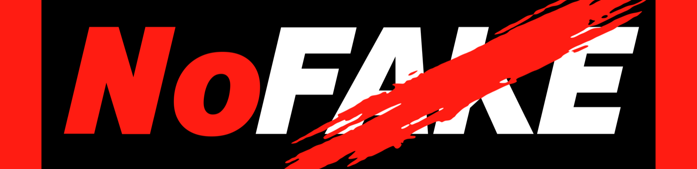

プロジェクトを選んで、撮影を始める。途中のデータは自動で保存されます（電源が切れても、続きからできます）。
元の端末で「書き出し」したファイルを選ぶか、「コード」を貼り付けて、読み込みます。途中のデータ（残り時間・お題の順番）も引き継がれます。
先に、上の同意にチェックを入れてください
最初の説明の画面と、乾杯・自己紹介の画面の文章を書き換えられます。{school}は学校名、{n}はテーマの数に置き換わります。空にすると初期の文章に戻ります。
学校名とメモをもとに、話しやすく、見たくなるテーマ案を作ります。「伸びそうか」の判断は、AIの一般的な知識によるものです。過去の動画の再生数などを下のメモに貼ると、それを踏まえた案になります。
最後に、ひとりずつ一言ずつお願いします。終わったら、マイクを外してお帰りください。
時間テスト（本番では使わない）。押すと、時計が進みます。